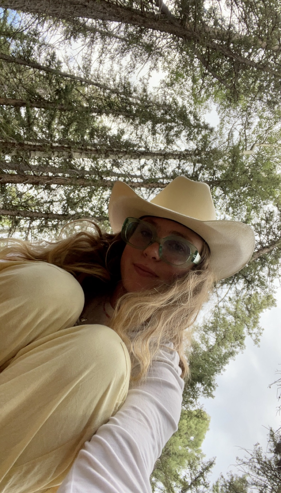
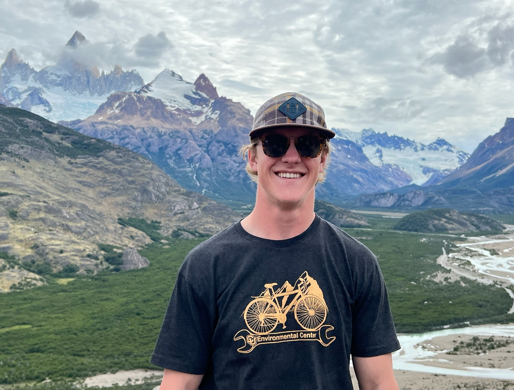

Meet the Creators
Claire Grossman
Head of Radical Ideas & Sketch-to-Stitch Magician
Claire brings her expertise in sustainable design and material innovation to the Nova Tent project. With a background in industrial design and a passion for eco-friendly solutions, she has been instrumental in developing the tent's unique material composition and structural design. Her attention to detail and commitment to sustainability have helped shape the Nova Tent into an environmentally conscious product that doesn't compromise on performance or comfort.

William Fitzgerald
Stargazing Seamster & Stoke Specialist
William's engineering background and problem-solving skills have been crucial in bringing the Nova Tent to life. Specializing in structural engineering and product development, he has focused on creating a tent that is both lightweight and durable. His innovative approach to the tent's frame design and assembly system has resulted in a product that is easy to set up while maintaining exceptional stability in various weather conditions.
